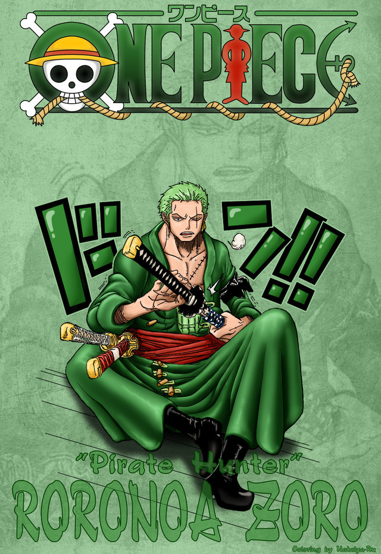

“海贼猎人”罗罗诺亚·索隆（ロロノア·ゾロ/Roronoa Zoro）
初次登场：漫画第3话
年龄：19岁→21岁
生日：11月11日
血型：XF型
身高：178cm→181cm
故乡：东海·霜月村
身份：东海海贼赏金猎人→草帽海贼团战斗员
喜欢的食物：白米，海兽的肉，适合下酒的食物
爱好：睡觉、修炼、喝酒。
梦想：世界第一大剑豪
缺点：路痴
悬赏：：6千万（阿拉巴斯坦事件）→1亿2000万（司法岛事件）→3亿2000万（德雷斯
罗萨篇）
爱喝酒，爱睡觉，讲义气，海贼第一超级大路痴。为了小时候与挚友的约定而踏上
了前往世界第一剑士的道路，随后成为路飞出海后遇到的第一个伙伴。在初次败给世界第一剑士“鹰眼米霍克”后向路飞发誓永不再败，并且更加努力的锻炼自己。两
年后的他成功与伙伴们汇合，并且为了实现自己的梦想，奔赴强者如云的新世界。